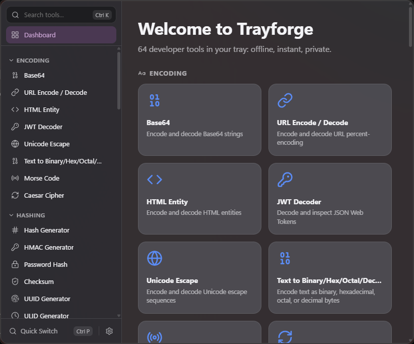
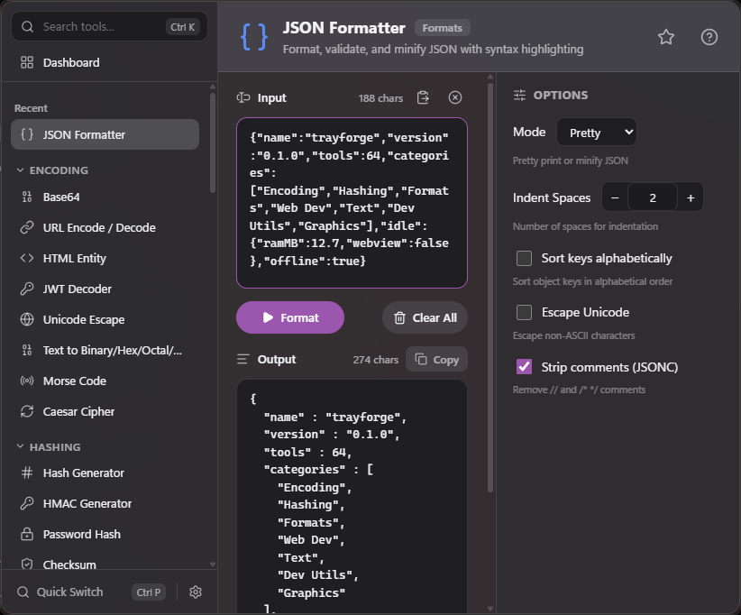
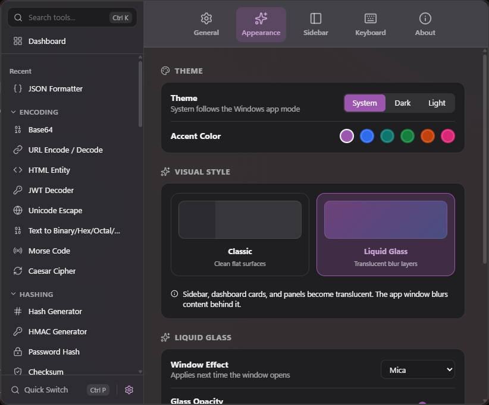

Instant, from anywhere
The global hotkey Ctrl+Alt+D opens Trayforge over whatever you are doing. No browser tab to find, no site to trust with your tokens.
Free and open source for Windows 10 / 11
Base64, hashes, JSON, regex, JWT, color pickers and more. Press Ctrl+Alt+D, do the thing, close the window. Everything runs offline, and nothing is left running afterward but a 12.7 MB tray process.
Installer (.exe), MSI, or portable .exe. MIT licensed.

The global hotkey Ctrl+Alt+D opens Trayforge over whatever you are doing. No browser tab to find, no site to trust with your tokens.
Encoding, hashing, formats, web dev, text, dev utilities and graphics, in seven categories.
All work happens on your machine in a Rust core. No telemetry, no accounts, no network calls for your data.
12.7 MB
Closing the window destroys the UI and its WebView, so memory goes back down.
64 tools across seven categories. Tap a category to collapse it.
Acrylic or Mica, themeable accent, resizable, and it remembers its size.


The window is a guest, not a resident.
Just the tray icon, the hotkey listener and the tool core. About 12.7 MB.
Hotkey or tray click builds the Tauri window and WebView with the React UI.
Closing tears down the window and its WebView, returning memory to the system.
git clone https://github.com/hhhhhffd/trayforge
cd trayforge
npm --prefix ui install && npm --prefix ui run build && cargo build --release -p trayforgeRelease builds are not code-signed, so Windows shows "Windows protected your PC". Choose More info, then Run anyway. The source is public and you can build it yourself.
No. There is no telemetry and no account. The tools run locally and work without a network connection.
Windows 10 and 11. The UI uses the Microsoft Edge WebView2 runtime, which is preinstalled on Windows 11 and current Windows 10 installs.
The UI window and its WebView exist only while open. Close it and only the small Rust tray process remains, about 12.7 MB.
MIT. Use it, change it, ship it.